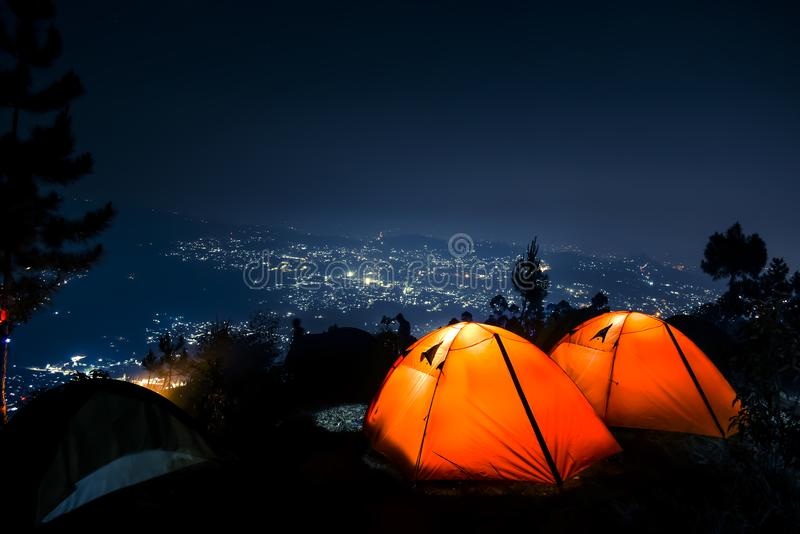

Gunung Putri Lembang
Tempat wisata di Bandung memang tak ada habisnya untuk dibahas terus menerus. Baik itu wisata alam dan juga sejarah. Banyak museum yang tersebar di Bandung untuk makin memperluas pengetahuan Anda terkait budaya dan juga sejarah Bandung. Namun jika Anda ingin mengunjungi tempat wisata alam sekaligus tempat wisata sejarah, maka Bandung memiliki Gunung Putri Lembang. Masih berada di kawasan Lembang, Bandung tak henti-hentinya membuat decak kagum para wisatawan yang ingin menikmati suasana liburan yang berkesan.
Berlokasi tak jauh dari Tangkuban Perahu, Gunung Putri Lembang bisa Anda jadikan alternatif lain ketika Anda ingin menikmati suasana alam yang masih asri dan masih alami. Bahkan Gunung Putri Lembang merupakan tempat wisata terbaik di Bandung yang lokasinya sangat mudah diakses melalui kota Bandung. Gunung Putri Lembang sendiri merupakan gunung yang areanya ditumbuhi dengan rumput dan juga pohon berukuran kecil lainnya yang mana di tengah gunung terdapat sebuah tugu yang dikenal sebagai Tugu Sespism. Tempat ini cocok dijadikan tempat pelarian Anda jika Anda ingin merasa lebih segar dari padatnya jadwal di perkotaan, sebab tempat ini masih sangat jarang dikunjungi oleh banyak orang, sehingga lokasi yang asri dan bersih menjadikan tempat ini tempat yang pas untuk menyegarkan kembali pikiran Anda.
Bahkan untuk Anda yang hobi hiking, maka tempat ini merupakan tempat yang tepat, sebab Gunung Putri Lembang sendiri merupakan salah satu tempat rekreasi di Bandung yang akan memberikan Anda pengalaman hiking yang berbeda dari gunung lain kebanyakan. Bahkan gunung ini juga cocok dijadikan latihan untuk para pemula yang ingin mendalami hiking. Selain dapat menikmati udara segar, Anda juga bisa melihat hamparan kota Bandung yang kian mempercantik diri. Berbicara tentang tentang Gunung Putri Lembang, gunung ini juga tak hanya menawarkan keindahan panorama alam, namun gunung ini juga menawarkan tempat sejarah yang mengandung nilai historis penting, yakni berupa benteng peninggalan zaman Belanda yang sudah tak terawat lagi dan sudah tertutupi ilalang. Tak ada yang tahu sejarah dan latar belakang mengapa ada benteng di sini, namun masyarakat sekitar menamai benteng ini dengan nama Benteng Jayagiri. Bentengnya sendiri memiliki ukuran yang luas dan lebar. Benteng ini beratapkan tanah dan ilalang. Diperkirakan, benteng ini dibangun antara tahun 1913 -1917, tepat di masa Perang Dunia I meletus. Konon katanya legenda menyebutkan bahwa Gunung Putri merupakan tempat persembunyian Dayang Sumbi ketika dikejar-kejar oleh sang anak, Sangkuriang.
Tiket untuk masuk Gunung Putri Lembang sendiri cukup murah, hanya dengan tiket Rp10.000/ per orang Anda sudah bisa menikmati keindahan salah satu tempat wisata di Bandung.